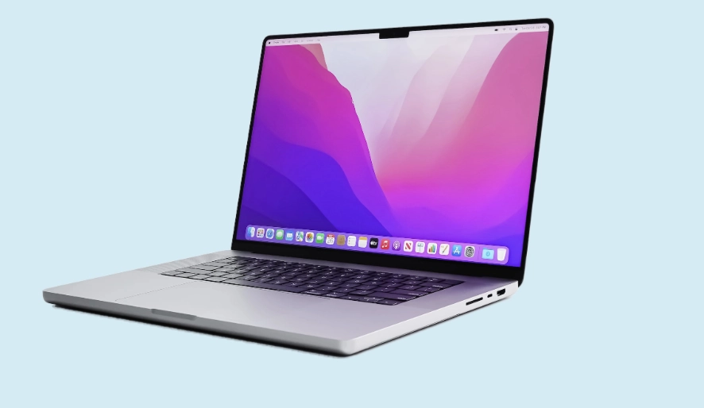

TEMA 2 - WEB
Formål
Formålet med tema 2 er at give en grundlæggende introduktion til de mest anvendte redskaber i en multimediedesigners værktøjskasse. Redskaberne udgør fundamentet for resten af uddannelsen på MMD. Temaet introducerer grundlæggende faglige begreber inden for design af digitale brugergrænseflader, digital indholdsproduktion, digital kommunikation og responsivt webdesign. I tema 2 lærer man at sætte et website op i HTML og CSS, og får de første færdigheder inden for udarbejdelse af grafik og billedbehandling samt opsætning af tekst og billeder i Figma.

Proces
Processen med dette site var fagligt udfordrende og kan bedst beskrives som at skulle lære et helt nyt sprog. I temaets løb lærte jeg at et website er opbygget med semantiske HTML-elementer: header, main og footer. Jeg lærte at analysere hjemmesider ud fra gestaltlove, viden om lokale og globale elementer samt hvad forskellen på sans serif og serif er. Jeg lærte om responsivt design med mobile-first, CSS Grid og media-queries. Særligt er jeg glad for indsigten i hvor forskelligt design kan være ud fra formatet. I udarbejdelsen af “website” arbejdede jeg med udleverede grid-øvelser, og dem kan man se implementeret på hjemmesiden. Der er brugt grid på fem forskellige måder på siderne. Alt i alt en god proces, som gav mig lyst til at arbejde videre med de nye færdigheder, jeg har tilegnet mig.
Produkt
“Website” er en hjemmeside om computere, hvor indholdet var lavet på forhånd, og min opgave var at style og layoute med udgangspunkt i HTML og CSS. Sitet indeholder fem HTML-sider og to CSS-sider, hvor alle sider har en header med en navigationsmenu og en footer. Navigationsmenuen indeholder JavaScript og var også lavet på forhånd, men jeg har tilføjet styling. Da indholdet var udarbejdet på forhånd, var mit primære fokus styling og layout af sitet. Jeg forsøgte at skabe en rød tråd, og lod mig inspirere af forsidens første billede: en computer med et klassisk Apple-baggrundsbillede. De gennemgående farver på sitet er derfor nuancer af blå, lilla og pink.
Se site herLæring
Tema 2 og arbejdet med studiestartsprøven gav mig et godt fundament og indsigt i, hvad uddannelsen om multimediedesigner byder på. Tema 2 krævede meget af mig fagligt, men det var samtidig en positiv oplevelse at blive udfordret og få prøvet kræfter med kodning. Jeg tillærte mig en masse viden og færdigheder inden for både kodning og design. Fra temaet tager jeg særligt færdigheder inden for grid med videre, og strukturering af layout og styling i CSS. Ved at arbejde med grid på flere forskellige måder fik jeg en bedre forståelse for, hvordan layout kan struktureres og være responsivt på tværs af forskellige skærmstørrelser. Det gav mig samtidig en større forståelse for, hvor vigtig planlægning af et layout er i udviklingen af et brugervenligt website. Derudover fik jeg indsigt i bæredygtighed i forbindelse med billedoptimering, herunder valg af filformat og billedstørrelse - som jeg nu ved har indflydelse på sitets performance og tilgængelighed.